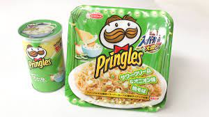

Noodles

What you will need:
- a will to live
- 100gr noodles
Instructions:
Boil water
To achieve maximum temperate make sure your kettle is positioned in the centre of the earth
Pour water into bowl
Add noodles and soup base
Enjoy!